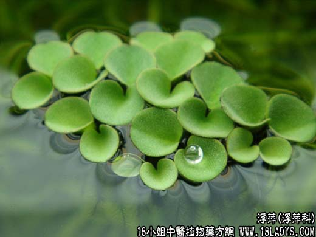

【中药概述】
浮萍为浮萍科水生漂浮植物紫萍的全草。辛、寒。入肺、膀胱经。
1．发汗解表：用于风热表证，症见发热、头痛、无汗、口渴、咽痛，用一般辛凉解表剂不能发汗者。
2．初疹不透：本品疏风散热、善达肌表，故常用于热邪郁于肌表而致麻疹不透者。可与牛蒡子，蝉蜕，薄荷，葛根等同用。如（<沈氏尊生>浮萍丸）。
3．祛风止痒，利水消肿：用于风热瘾疹，皮肤瘙痒，水肿兼有表证者。
【药效鉴别】
浮萍升散，能宣肺气而外达皮毛，有较强的发汗解表、透疹和祛风止痒作用；又通利水道。其性寒凉，宜用于热证。
【临证应用】
浮萍、防风各9g、牛蒡子，薄荷，紫苏叶各6g，水煎服，治风热感冒。
【药理作用】
对卡他杆菌、金黄色葡萄球菌等有抑制作用。
【化学成分】
含醋酸钾、氯化钾、碘和溴等物质。有强心、利水及解热作用。
【用量用法】
5——12g，水煎服。外用煎汤熏洗。